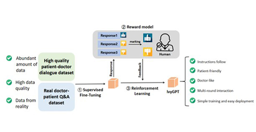
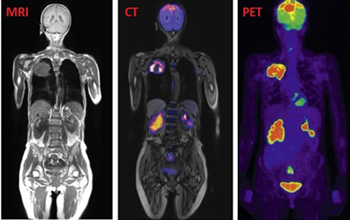
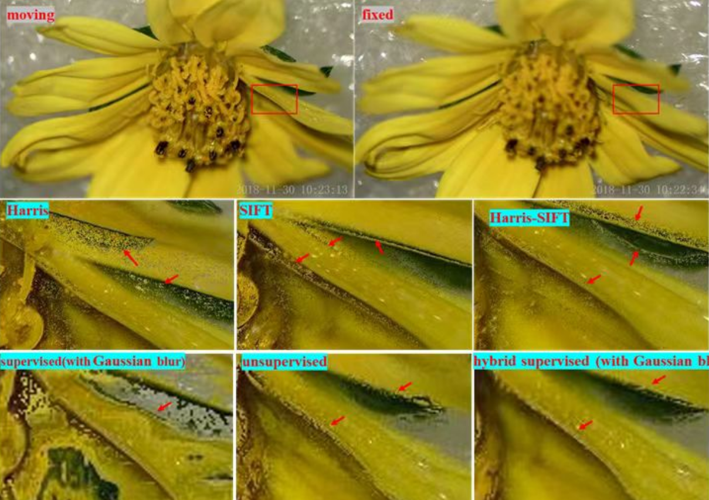
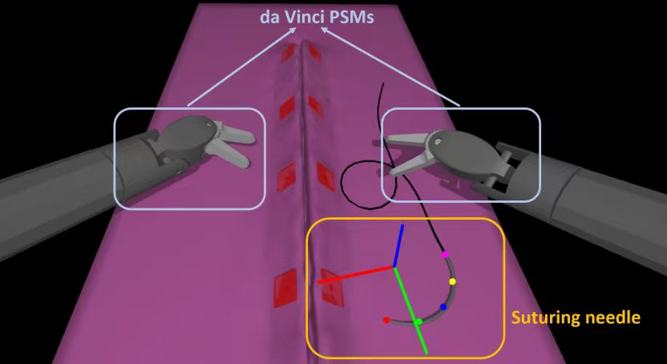
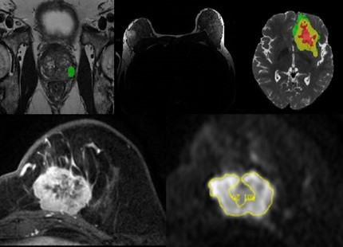
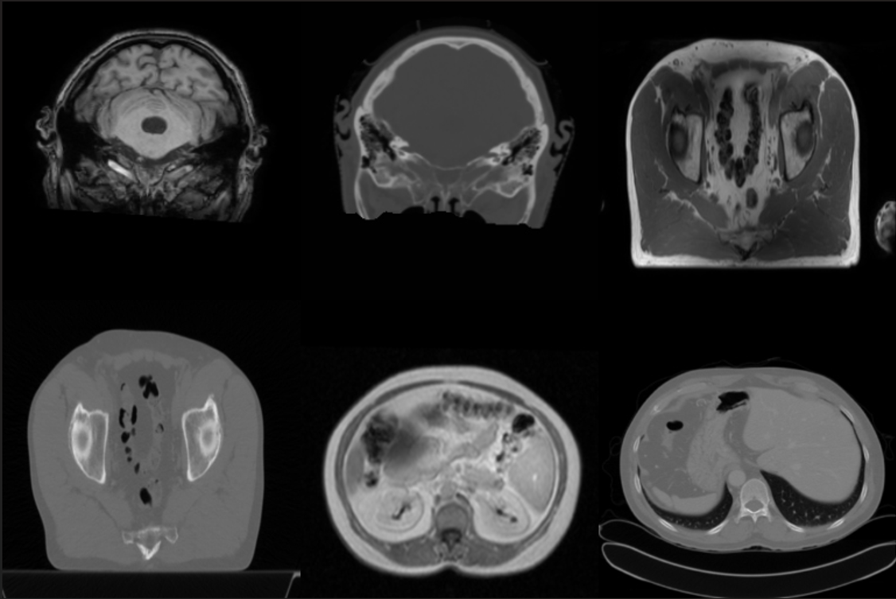
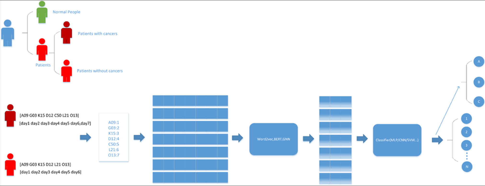

Research
The generalized electric medicine group is part of the Faculty of Applied Sciences of the Macao Polytechnic University and is dedicated to the research of new methods and technologies in the field of artificial intelligence and their application in various fields, such as medical imaging and healthcare field, physiological information field, and education field. Our goal is to develop computer algorithms to deal with and explain practical problems that exist in several fields.
Research lines
Click on any of the cards below to learn more about the research lines in GEM.

IvyGPT: InteractiVe Chinese pathwaY language model in medical domain
General large language models (LLMs) such as ChatGPT have shown remarkable success.

Image Quality Improvement
Mobile ultrasound devices play a vital role in emergency and family doctor services. However, the image quality of these devices, compared to traditional medical ultrasound equipment, leaves room for improvement.

Chest CT-IQA: A Multi-Task Model for Chest CT Image Quality Assessment
In recent years, especially during the COVID-19 pandemic,a large number of Computerized Tomography (CT) imagesare produced every day for the purpose of inspecting lung diseases.

Advanced U-Net for Multi-class Segmentation of Mammography
Detecting cancer in its early stages through accurate, efficient, and economical methods is essential to reduce its impact.

Non-contact physiological monitoring of newborn infants
Non-contact vital-sign estimation allows the monitoring of physiological parameters

Automatic segmentation and direct calculation of radiotherapy
The quality of multi-focus microscopic image fusion hinges upon the precision of the image registration technology.

Nuclear Medicine Imaging Analysis
Nuclear Medicine Imaging Analysis utilizes radioactive tracers to unveil physiological processes at the cellular level, providing vital insights for diagnosis and treatment. This precise modality transcends traditional imaging's structural scope, targeting molecular activity to pinpoint disease states early, aiding in personalized medicine's advancement.

Deep learning framework for microscope multi-focus images
A hybrid supervised fusion deep learning framework for microscope multi-focus images

Breast cancer detection and diagnosis
The application of the computer-aided technology in medical imaging has achieved great success. We aim to research the computer-aided breast cancer detection and diagnosis on various kinds of medical images.

Multi-modality
Our research focuses on the intricate world of cross-organ, multi-modality imaging, delving into a diverse array of medical imaging techniques

Application of AI algorithms in diagnosis of fundus diseases
The application of artificial intelligence algorithms in the diagnosis of retinal diseases is progressively leading the transformation of the field of medicine.

Da Vinci surgical robot
Computer-assisted surgery (CAS) has ushered in a transformative era for minimally invasive procedures, with the DaVinci Surgical System at the forefront as a cutting-edge robotic surgical platform.

MRI omics
Tumor is one of the main causes of death in humans, and early detection and discovery of tumors through imaging means is crucial for patient treatment and prognosis

Video-based animal behaviour recognition
With the increasing demand of animal products has brought animal welfare analysis, as more researcher involves, especially into the analysis of the social interactions inside commercial farms, For instance, disruptive inter-animal interaction, e.g. tail-biting, stepping others, etc..

PCB Circuit Board Defect Detection
Efficient PCB defect detection is vital for maintaining high-quality and reliable electronic devices, leading to benefits such as improved product quality, cost reduction, regulatory compliance, brand reputation, and enhanced device lifespan. Additionally, it enhances market competitiveness by meeting industry standards.

MR Breast Artificial Intelligence Research
The study of breast dense tissue is of great significance for the evaluation of breast health, the early detection of breast diseases and the risk assessment of breast cancer.

Universal Ultrasound Model
Ultrasound imaging is widely utilized in clinical settings due to its cost-effectiveness, mobility, and safety. While current research in medical universal AI predominantly focuses on language models and general image segmentation, our study introduces a novel universal framework tailored specifically for ultrasound applications.

Multi-organ MRI to pseudo-CT generation
In radiation therapy planning, CT images provide crucial tissue electron density information for dose calculation. However, CT scans expose patients to additional radiation. Although MRI images do not produce radiation, their unique signal characteristics require precise mapping to corresponding CT manifestations to ensure the effectiveness and safety of treatment. Therefore, generating high-quality pseudo-CT images from specific organ MRI data is of significant importance.

Early Prediction of Disease Onset Based on Longitudinal Electronic Health Records
Breast cancer stands as a formidable challenge to women's health, compounded by the current absence of an effective treatment. This underscores the pivotal role of early detection and diagnosis in mitigating the risk of mortality. Over the past few decades, an array of enhancement techniques, including X-rays (mammography), ultrasound, and magnetic resonance imaging (MRI), has been deployed to offer intricate insights into mammogram images, streamlining the detection of breast cancer. While these methods excel in screening for breast tumors, they fall short in monitoring patients' diverse stages and grapple with the challenges of predicting diseases in advance.